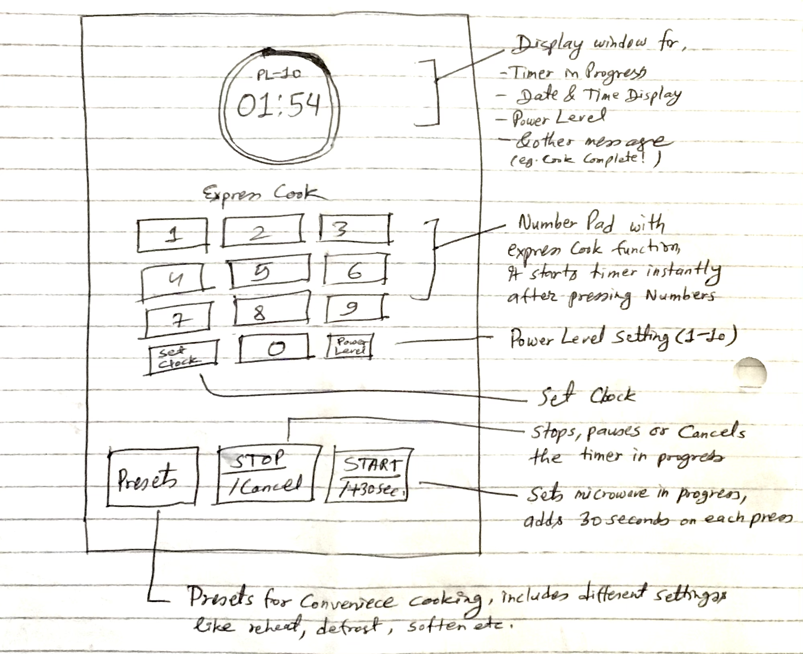
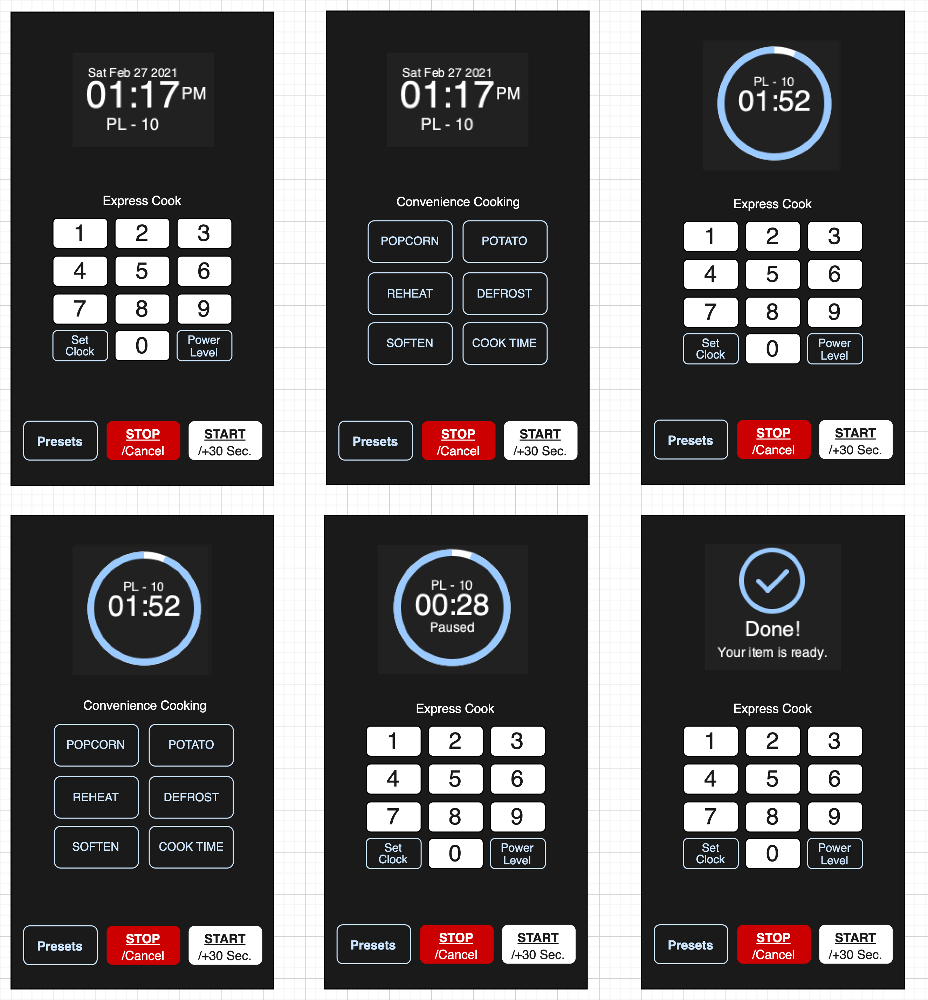

Human Computer Interaction - Project I

Issues with the Interface
The keys on the front panel are very small and very hard to find
The front panel located on the microwave's door has the time addition and reduction keys, start and stop keys, and it has a display showing the time and other statuses of the microwave. The panel is a touch panel, and its main problem is that the keys on it are very small and very hard to find. For instance, the time addition and reduction keys are indicated by a plus and a minus sign that are very hard to read. One has to struggle to be able to identify them.
The main panel is located behind the door, and one has to access the panel when the door is open.
The main panel of the microwave that has most of the functionalities is located inside the microwave. One has to open the door, keep the door open while setting the power and time. Then one has to close the door and then press start. In case one wishes to change the setting, like reduce the power, they have to stop the microwave and then open the door for them to access the power setting button.
Lacks number pad, and has to press +/- keys repeatedly
In setting the time or power level, one has struggle with pressing +/- sign repeatedly, while adding or reducing time on the panel on the front of the door, one has to struggle with the unresponsive, unreadable, and the very small plus and minus signs that take a lot of time to interact with.
Have a tedious process before one can set-up for a cooking instance
The time setting process makes setting-up the microwave ready for cooking a tedious and complicated process.
Opening the door
The microwave do not have separate handle to open the door. It could be confusing to first time users.
Common Usage of a microwave
Reheating food: Reheating cold food is the number one use of microwave. Microwave ovens are efficient in reheating any kind of food and retains all the essential nutrients without making food soggy. The microwave interface usually has an automatic setting for reheating food with a dedicated button/key, thus making it easier.
Cooking: A microwave can as well be used as an alternative to cooktops and stoves. Some microwaves are multifunctional that can be used in steaming, blanching, roasting, and even grilling food items. The microwave ovens have a versatility that allows one to use them for cooking purposes without the need for separate kitchen appliances. Cooking with a microwave is not a common use, and the interface does not have a direct way to assist in cooking.
Defrosting: Defrosting is a common function of microwaves. The microwaves are used in defrosting frozen food from the freezer ring before it is cooked. Most microwaves have an automatic defrosting setting and key, which makes it easier to defrost using the microwave.
Boiling Water: Microwave can be used to boil the water, and also to reheat tea or coffee.
Rare Usage of a microwave
Disinfecting kitchen items: The microwave can also be used in disinfecting kitchenware such as plastic cutting boards and sponges. One just has to sock these items in some lemon and then place them in the microwave and heat them for a minute. This deodorizes and disinfects the items.
De-crystallizing of honey: The microwave can as well be used in de-crystallizing of honey. A jar of solidified honey just has to be opened and placed in the oven, and heated for a minute. The microwave reheating interface interaction process can be used in this function, thus making it simple.
Heating of beauty products: The microwave can also be used in the heating of some beauty products before they are applied. It can be used in heating facial masks, reheating gel packs, and heating hot oil conditioning packs in an easy and safe manner.
The sequence of Interacting with the microwave
- For a manual process, Place the food in oven, set the cook time by pressing +/- keys, set the power level if required by pressing +/- keys, close the door and press start.
- To use the presets, Place the food inside, click on any preset modes like Sensor Cook, Defrost, Popcorn, and close the door, then press start. When timer is in progress, one can press start key to add more time in 30 seconds increment. After time elapse, microwave plays a sound to notify user.
- To use defrost, open the oven door, press Clear button, Press Defrost button once, DEF1 appears in the display, press + key until it shows the food weight, close the oven door, and press Start.
- To set the timer, open the door, press Clear, press timer once, 10 seconds appears on the display, set desired time by pressing +/- button, press enter to start the timer. When timer completes, A word "End" appears on the display with a sound. To cancel the timer, open the door, and press timer once.
How does the Microwave help user to figure out how to make it work?
The microwave helps the user in making it work in the following ways.
- It has labelled buttons and keys that the user can read and input their desired commands.
- It has a display that shows the time as the user sets the time to cook or heat.
- It produces sounds that help the user to know when it starts or finishes cooking.
How does the microwave provide feedback to the user?
The microwave provides feedback by:
- It displays information as time set on a screen display and also shows how the time elapses.
- It turns on the light inside the door when oven starts and turns it off when done.
- It produces sounds during button press, and when pressing the start button. It also notifies user at the end when cook completes.
Common Mistakes That Can Be Made in Using the Current Design
The following are some common mistakes that can be made while using the current design.
- While setting the cook time, one could miss the power level which do not show on the display while cooking, the default power level would not be appropriate in some case.
- The current design has a 10x increment or reduction of time, and if one is in a hurry, they can set too much time or too little time for the cooking or heating.
- The user can forget to set the weight of the item while defrosting. Auto weight could be useful.
- User could use the preset without knowing the actual setting & levels, that can overheat the food.
Suggestions to Improvement of the Current Design
The current interface of the Microwave Oven can be improved through the following.
- Bring all the interface panels to the front by having one panel on the door such that the current position of the inside panel is accessible even when the door is closed.
- Adjusting the panel to cover all the functionalities without requiring too much space while at the same time making all information readable and the keys being of reasonable size.
- Having a touchscreen that has a number keypad where the user can input their desired time, unlike in the current design where they input the time in increments of 10x.
Low Fidelity Prototype
User Interface
Final Control Interface GIF

Presentation Video
In submission